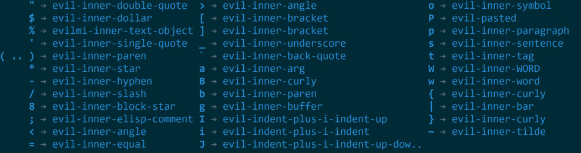
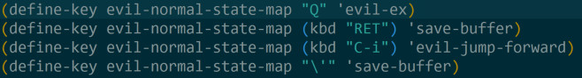

Emacs Tweet
1 spacemacs中支持的text object.

2 spacemacs快捷键定义
有几个快捷键失灵或者被覆盖，特意在 .spacemacs 中重定义。

在evil的normal模式中按下ENTER或者 ='= 键保存修改。这比 :w 或者 SPC f s 都方便。
3 spacemacs 定义文件保存快捷键
(define-key evil-normal-state-map "\'" 'save-buffer) (define-key evil-normal-state-map "’" 'save-buffer) (define-key evil-normal-state-map "‘" 'save-buffer) (define-key evil-normal-state-map (kbd "RET") 'save-buffer)
在normal模式中按下 ' ‘ ’ 或者 <RET> （回车键）都可以实现文件保存的目的。
4 spacemacs 循环切换item符号
在spacemacs中，可以通过 1. 为多个项目或者步骤编号，比如 1. 代表第一步， 2. 代表第二部，依次类推，如下所示：
1. 第一步 2. 第二步 3. 第三步
当需要添加下一个步骤时，只需要在当前步骤按快捷键 <ALT>-<RET> 即同时按下 Alt和回车，即可添加下一步。
另一个小窍门是实用 org-cycle-list-bullet 命令来实现 item符号的改变。在spacemacs中绑定为 - 。 仍旧用上面的例子，当我们进入 normal 模式，把光标放到任意一个 item 的任意一个位置，按下 - 就会发现 item 符号发生了变化，比如我把光标放在“第二步” 的“二”字上，按下 - 就有
A) 第一步 B) 第二步 C) 第三步
因为这个命令是 cycle 的，所以重复按下 - , item 符号会在Org支持的 item 符号之间切换。目前 Org支持的 item 符号有 * + 1. a) A) .